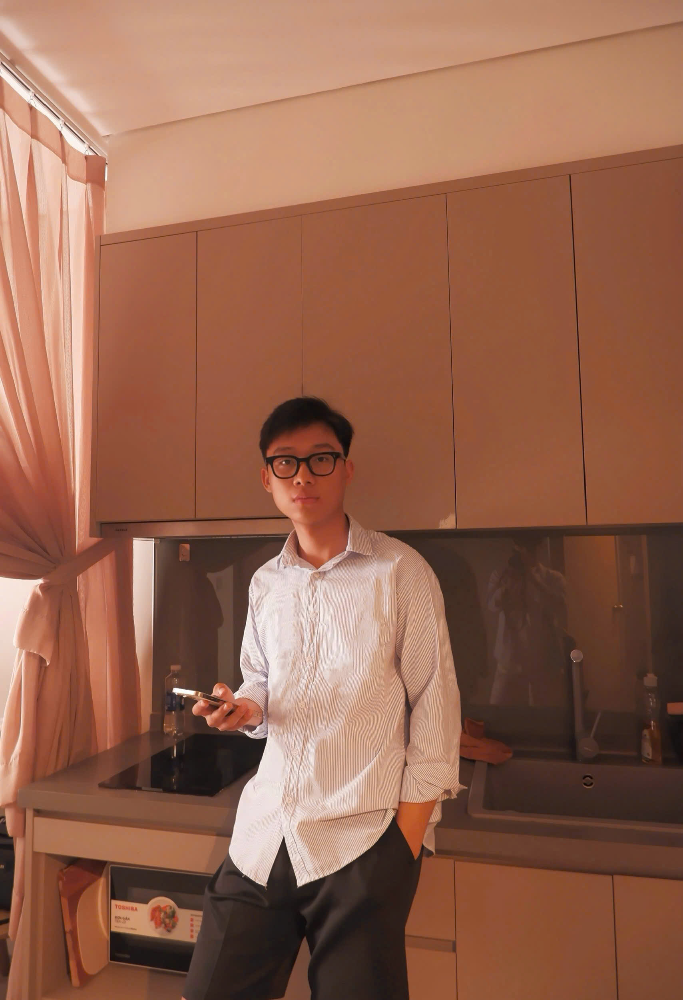
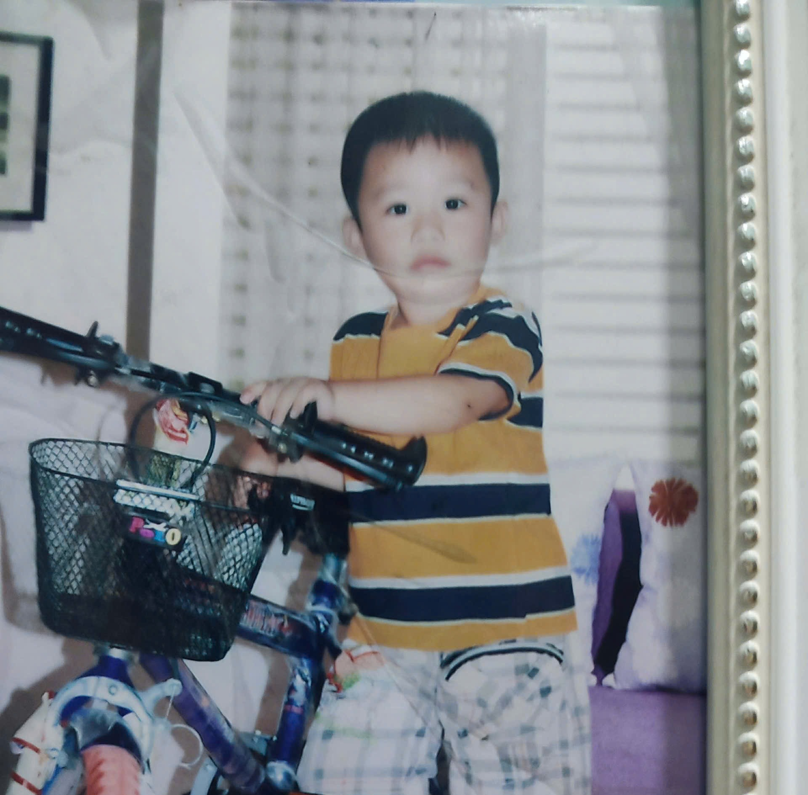

Developer - Event - Shipper cho mẹ
Ngày sinh: 02 / 09 / 2006
Nơi sinh: TP.HCM (Bình Dương cũ)
Quê quán: Nghệ An - Thái Bình
Xin chào, nếu bạn đang đọc những dòng này thì có lẽ bạn vừa ghé qua blog cá nhân nhỏ của tôi.
Tôi là Phan Ngọc Quân. Nếu phải mô tả ngắn gọn về bản thân thì chắc chỉ có thể nói rằng tôi là một người khá khó đoán. Có lúc tôi hướng nội, thích ở một mình và làm việc với máy tính. Nhưng cũng có lúc tôi lại hướng ngoại và có thể nói chuyện rất thoải mái với những người thân thiết.
Với người lạ tôi thường khá trầm và ít nói. Không phải vì khó gần, chỉ đơn giản là tôi cần thời gian để cảm thấy thoải mái hơn khi nói chuyện. Nhưng khi đã thân rồi thì tôi có thể nói khá nhiều và đôi khi cũng hơi khùng một chút.
Tôi thích sự chỉn chu, đặc biệt là trong lời nói và cách cư xử. Tôi tin rằng cách mình nói chuyện với người khác cũng thể hiện rất nhiều về con người của mình.
Tôi thích chơi thể thao, thích hát dù không chắc là hát hay, và thỉnh thoảng cũng thích vào bếp nấu ăn. Món ăn tôi thích nhất là bún bò Huế. Ngoài ra tôi cũng biết làm việc nhà vì tôi nghĩ đó là một kỹ năng cơ bản.
Gia đình của tôi không phải lúc nào cũng êm ấm như nhiều gia đình khác. Nhưng chính vì vậy mà tôi càng mong sau này có thể xây dựng một gia đình thật sự ấm áp cho riêng mình.
Còn về gu bạn gái thì thật ra tôi không có tiêu chuẩn cụ thể nào cả. Miễn là thích là được. Nhưng điều tôi trân trọng nhất là một cô gái yêu tôi và vẫn được là chính mình khi ở bên cạnh tôi.
Tôi không phải là một người quá đặc biệt, cũng không phải người giỏi nhất trong bất cứ điều gì. Tôi chỉ là một người đang cố gắng từng ngày để trở nên tốt hơn một chút so với ngày hôm qua.
Gửi một người nào đó trong tương lai, xa hơn một chút thì có lẽ là người sẽ cùng anh đi rất lâu về sau. Anh không biết chúng ta sẽ gặp nhau vào thời điểm nào của cuộc đời, nhưng anh tin mỗi cuộc gặp gỡ đều có thời điểm riêng của nó.
Hiện tại anh vẫn đang sống cuộc sống của mình, học thêm nhiều thứ, làm việc chăm chỉ hơn một chút và cố gắng trưởng thành từng ngày. Không phải vì ai ép buộc, cũng không phải vì muốn chứng minh điều gì, chỉ là anh muốn khi đứng trước em trong tương lai anh có thể tự tin rằng anh đã cố gắng sống tử tế với cuộc đời của mình.
Nếu một ngày chúng ta thật sự gặp nhau và bắt đầu một câu chuyện nào đó, anh hy vọng lúc đó cả hai đều là phiên bản tốt hơn của chính mình. Không cần phải hoàn hảo, chỉ cần đủ chân thành để đi cùng nhau một quãng đường dài.
Cho anh thêm một chút thời gian nhé. Anh vẫn đang đi từng bước một trên con đường của mình. Và biết đâu một ngày nào đó, giữa rất nhiều người trên thế giới này, anh lại tình cờ gặp được em theo một cách rất tự nhiên.
Một tấm ảnh lúc nhỏ của tôi.
